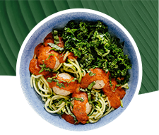
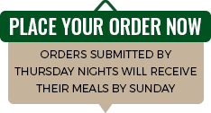

|


|
What to expect from Ilana Meals
- Designed by Ilana Muhlstein, M.S.R.D.N.,
Dietitian Nutritionist,bestselling author,and
mom of three,who loves delicious food-even
more when it'sdelivered straight her door!
Ilana Muhlstein's menu is full of flavor full and
fresh meals that are high in protein, fiber, and
non-starchy vegetables.
-
The entire Ilana’s Meals menu-is dairy free and
gluten free and focused on a low netcarb,
plant-forward approach to eating. Thathas
helped her lose 100 pounds and keep it off
-
The mealshave healthy fatsas “accessories,”
and moderate calories and sodium to help you
reach yourhealth, wellnessand weightloss
goals.
|